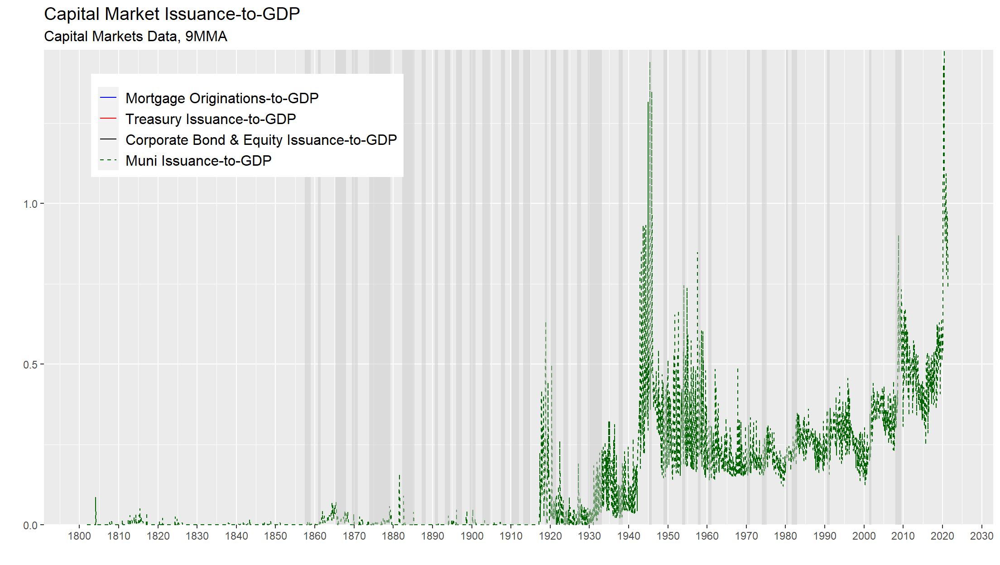

Capital Markets Data - Monthly Chartpack
Steven Sabol
July 12, 2021
Abstract
This is the Capital Markets Data Monthly Chartpack. For more information about the underlying data please email me at
steven@capitalmarketsdata.com
0.1
Example Plot
SELECT * FROM cmd_main ;
0.1
Example Plot
